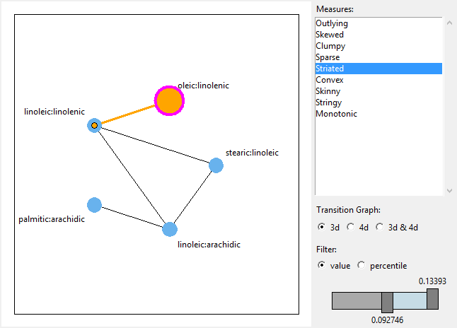

nodes <- LETTERS[1:5]
G <- completegraph(nodes)
LG <- linegraph(G)
g <- l_graph(LG)
l_navigator_add(g)loon's Graphs are defined by a list of node names, the from-to list of node names that define the edges and a Boolean value whether the graph is directed or not. This translates into the states nodes, from, to, and isDirected.
Get the state names with
states <- l_info_states(g)
names(states)Query a state, say background, as follows
g['background']Change a state, say again background, foreground, and colorEdge, as follows
g['background'] <- 'gray20'
g['foreground'] <- 'gray90'
g['colorEdge'] <- 'red'alternatively, and more efficient if you modify more than one state, use
l_configure(g, background='gray20', foreground='gray90', colorEdge='red')When creating a graph display you may specify any state at plot creation
nodes <- letters[1:3]
G <- completegraph(nodes)
LG <- linegraph(G)
g1 <- l_graph(LG, background='gray20', foreground='gray90', colorEdge='red')details on a state, say background, is easily had with
states <- l_info_states(g)
states$backgroundand a particular field
states$background$description* This has some undesirable side effects such as that the
states `itemlabel` and `showItemlabels` are actually for
nodes...
* Also the tags are not correct... (i.e. point vs. node)The graph has n dimensional states that are associated to nodes and p dimensional states that are associated with edges. To query which states are p dimensional use
states <- l_info_states(g)
names(Filter(function(x){x$dimension=='p'}, states))To change the layout of the graph use a graph layout algorithm and set the x and y states of the loon graph accordingly. loon supports straight lines for edges only.
To turn a graph into a navigation graph you need to add one or more navigators. Navigators have their own set of states such as from, to and proportion, and you can create state bindings for the navigator that call a function when a navigator changes its position on the graph. States and state bindings for navigators provide the facility to implement any graph semantic. However, certain graph semantics (e.g. the default semantic with 2d projection along a geodesic path between spaces) involve lots of logic and control over plots, and hence it makes sense to en encapsulate them. We do this by providing contexts. A context is added to a navigator and will do a specific task if the navigator's position on the graph changes.
We use the example at the beginning of this section:
nodes <- LETTERS[1:5]
G <- completegraph(nodes)
LG <- linegraph(G)
g <- l_graph(LG)The following code ads a navigator to the graph g
nav <- l_navigator_add(g, color='orange')
The navigator with the id stored in the nav has its own states that can be listed as follows
nstates <- l_info_states(nav)
names(nstates)The position of the navigator on the graph is completely defined by the states from, to, and proportion. The states from and to hold vectors of node names of the graph. The proportion state is a number between and including 0 and 1 and defines the how far the navigator is between the last element of from and the first element of to. The to state can also be an empty string '' if there is no further node to go to. Hence, the concatenation of from and to define a path on the graph.
The position of the navigator on the graph can be controlled programatically as follows:
l_configure(nav, from=c('A:B','B:C','C:D','A:D'), to=c('D:E','B:E'),
proportion=0.2)
The elements related to the navigator you see on the plot above are the
proprtion between the last node in from and the first node in to. If to is empty, then the navigator sits on the last node of from.from and the proportion that has been traversed on the current edge.to.The graph display supports direct interaction with the navigator and navigator path using the mouse and keyboard. To move the navigator with the mouse you must first click on it to select it which will set the activeNavigator graph state to the navigator id and causes the navigator to be highlighted with the navigator outline in the selection color.

In this state the following interactions are possible

scrollProportionIncrement state of the navigator.Note that the selection of a navigator, the highlighting of the adjacent nodes, and the edge selection circle are mouse interaction states and have no equivalent display states. That is, they are all transient and are undone as soon as the Shift and or Mouse press gets released.
The animation of the navigator can also be done programatically with any of the following commands
l_navigator_walk_forward(nav)
l_navigator_walk_backward(nav)
l_navigator_walk_forward(nav, 'C:D')
l_navigator_walk_backward(nav, 'B:C')
l_navigator_walk_path(nav, path=c('D:E','B:E','B:D','A:D'))animationPause and animationProportionIncrement to control the animation speed.Navigators support state bindings. You can use state bindings to implement your custom navigation graph semantic.
We use the following graph and navigator for our example:
nodes <- LETTERS[1:5]
G <- completegraph(nodes)
LG <- linegraph(G)
g <- l_graph(LG)
nav <- l_navigator_add(g)To add a state binding use
my_semantic <- function(widget, navigator) {
navi <- navigator
class(navi) <- c("loon", "l_navigator")
attr(navi, "widget") <- widget
cat(paste0('do stuff: ', widget, ', ', navigator, ': ',
tail(navi['from'],n=1),'-',
round(navi['proportion'],2),'-',
navi['to'][1],'\n'))
}
l_bind_state(nav, event=c('from', 'to', 'proportion'),
function(W,nav) my_semantic(W,nav))The current substitutions for navigator state bindings are
| argument name | substituted value |
|---|---|
W |
widget path name |
nav |
navigator id |
e |
events (states changed) |
b |
binding id |
O |
canvas path, useful for debugging |
Remember that these substitutions get passed to the R function as a Tcl object, hence you need to convert them to the desired type before using them in your code.
Contexts implement standard graph semantics. Common to all contexts is that they sign up to the navigators state changes and will evaluate its (i.e. the context's) command state. The contexts add substitution in the command evaluation that are meaningful for the particular context. Currently the following contexts are implemented:
Context2d: maps all locations on the graph that represent 2d spaces to xvars and yvars minimizing the occurrences of variable names in xvars and yvars. For example, if a navigator gets moved from node A:B on the edge towards the node D:A then xvars will be A and yvars will be (B, D). The order of the variable names in the node names is only important if the navigator jumps to a new node or the context gets initialized. In that case the node gets split into the two variables and the first gets mapped onto xvars and the second to yvars. After initialization the context2d will try to keep the variables in the same xvars or yvars if possible. For example, moving the navigator form not A:B to node B:C with xvars=(A,C) and yvars=B, once the navigator arrives at B:C then xvars=C and yvars=B even though the navigator is on B:C.
Geodesic2d: every location on the graph with an orthogonal projection of the data onto a two-dimensional subspace. The nodes then represent the sub-space spanned by a pair of variates and the edges either a 3d- or 4d-transition of one scatterplot into another, depending on how many variates the two nodes connected by the edge share. The geodesic2d context inherits from the context2d context.
The following code adds a geodesic2d context to a navigator:
G <- completegraph(names(iris[,-5]))
LG <- linegraph(G)
g <- l_graph(LG)
nav <- l_navigator_add(g)
con <- l_context_add_geodesic2d(navigator=nav, data=iris[,-5])This will open a new scatterplot showing the projection defined by the navigator location. Opening a new scatterplot is the default behaviour. Every navigator position change will evaluate the command in the command state of the context. The default command state is
con['command']
#> [1] ".l2.plot configure -x %x -y %y -xlabel %xlabel -ylabel %ylabel"where .l2.plot is the widget path name of the newly created scatterplot. If the command state is specified at context creation time, no scatterplot will be created. The command state supports substitutions similar to bindings. The substitution table is
| argument name | substituted value |
|---|---|
W |
widget path name (i.e. the graph) |
nav |
navigator id |
con |
context id |
x |
x coordinates of projection |
y |
y coordinates of projection |
xlabel |
suitable x label for projection |
ylabel |
suitable y label for projection |
from |
from state of navigator |
to |
to state of navigator |
p |
proportion state of navigator |
Hence, it is easy to use a different scatterplot device, say the basic R plots as follows:
plot(iris[,1:2], col=iris$Species, pch=16)
str2num <- function(x) {
vapply(unlist(strsplit(x, ' ')), as.numeric, numeric(1), USE.NAMES=FALSE)
}
con['command'] <- function(x,y,xlabel,ylabel) {
plot(str2num(x), str2num(y), xlab=xlabel, ylab=ylabel,
col=iris$Species, pch=16, xlim=c(-5,5), ylim=c(-5,5))
}Or you can add contour lines of the density estimates
require(MASS)
con['command'] <- function(x,y,xlabel,ylabel) {
x <- str2num(x)
y <- str2num(y)
fit <- kde2d(x,y)
plot(x, y, xlab=xlabel, ylab=ylabel,
col=iris$Species, pch=16, xlim=c(-5,5), ylim=c(-5,5))
contour(fit, add=TRUE)
}The context2d has a couple of noteworthy states, use the info states approach to learn more about them:
names(l_info_states(con))
l_info_states(con)$scalingThe context2d substitutions are
| argument name | substituted value |
|---|---|
W |
widget path name (i.e. the graph) |
nav |
navigator id |
con |
context id |
xvars |
x variables |
yvars |
y variables |
from |
from state of navigator |
to |
to state of navigator |
p |
proportion state of navigator |
If the context2d description above wasn't clear enough use the following code to get a sense of how xvars and yvars change.
G <- completegraph(c('A','B','C','D','E','F','G'))
LG <- linegraph(G, separator='-')
g <- l_graph(LG)
nav <- l_navigator_add(g)
foo <- function(xvars, yvars, p) {
cat(paste0(paste(xvars, collapse=' '), ' to ',
paste(yvars, collapse=' '), ': ',
round(as.numeric(p), 3), '\n'))
}
con <- l_context_add_context2d(nav, separator='-',
command=function(xvars,yvars,p)foo(xvars,yvars,p)): but it can be changed to any string in the linegraph function and as a context2d state.The graph can be switched as follows
LGnot <- complement(LG)
l_configure(g, nodes=LGnot$nodes, from=LGnot$from,
to=LGnot$to, isDirected=LGnot$isDirected)Sometimes it is useful to easily switch between different graphs. The graph selector widget maintains a list of graphs and updates the activewidget if a graph in its list gets selected.
For this example we pack a graph selector next to a graph display. More on widget layouts can be read here.
tt <- l_toplevel()
tktitle(tt) <- paste("Loon graph example with a graph switch")
g <- l_graph.default(parent=tt)
gs <- l_graphswitch(activewidget=g, parent=tt)
tkpack(g, side='left', fill='both', expand=TRUE)
tkpack(gs, side='left', fill='y')A graph gets added to the graph switch as follows
G1 <- completegraph(LETTERS[1:4])
G2 <- loongraph(nodes=c('a','b','c'), from=c('a','a'),
to=c('b','c'), isDirected=FALSE)
G3 <- linegraph(G1)
G4 <- complement(G3)
idG1 <- l_graphswitch_add(gs, G1, label='G1')
idG2 <- l_graphswitch_add(gs, G2, label='G2')
idG3 <- l_graphswitch_add(gs, G3, label='G3=linegraph(G1)')
idG4 <- l_graphswitch_add(gs, G4, label='complement(G4)')
l_graphswitch_set(gs, idG3)
The API of the graph switch is similar to that of the layers, except that graphs are arranged in a flat list and layers are arranged in a tree structure.
Either graphs of class loongraph or class graph which is defined in the graph R package can be added as follows
gs <- l_graphswitch()
graphId <- l_graphswitch_add(gs, graph=loongraph(nodes=c('A','B','C'),
from=c('A','B'), to=c('C','C'), isDirected=FALSE), label='loongraph')
## or
library(graph)
graphId2 <- l_graphswitch_add(gs, graph=randomEGraph(LETTERS[1:15], edges=50),
label='graph R package graph')The add method returns an id for the added graph.
Currently the activewidget state of gs is not set to any graph widget. Selecting a graph will throw an error saying that the graphswitch has not activewidget set. To set an activewidget (i.e. a graph widget) use
g <- l_graph()
gs['activewidget'] <- gNow, to push a graph in gs to the graph widget g you can either mouse select a graph on the graphswitch widget, or do it programmatically as follows
l_graphswitch_set(gs, id=graphId2)We continue by adding a few more graphs in order to introduce the other graphswitch related functions.
l_graphswitch_add(gs, graph=randomEGraph(LETTERS[1:15], edges=10))
l_graphswitch_add(gs, graph=randomEGraph(LETTERS[1:15], edges=20))To list the ids of all graph in the graphswitch use
l_graphswitch_ids(gs)If you have followed this example the ids method should return a list with ids graph0, graph1, graph2, and graph3, where the order of the ids is how they appear in the graphswitch widget. To move a graph to a different position in the list do as follows
l_graphswitch_move(gs, id='graph0', index=3)to move graph0 to the second last place. To reorder all graphs us
l_graphswitch_reorder(gs, ids=c('graph1', 'graph0', 'graph3', 'graph2'))To get the label of a graph use
l_graphswitch_getLabel(gs, id='graph1')To relabel a graph use
l_graphswitch_relabel(gs, id='graph1', label="A special graph")To delete a graph use
l_graphswitch_delete(gs, id='graph2')And to get the graph as a loongraph object use
l_graphswitch_get(gs, id='graph1')The loon R package comes with functions to create graphs. These are fairly basic and we recommend to use the algorithms and data structure from graph R package. To coerce between loongraph and graph object use the as.loongraph and as.graph functions. Note that the loongraph does not contain graph attributes such as edge weights etc. The plot.loongraph method will plot the graph if the graph package and Rgraphviz package are loaded.
To create a graph of class loongraph use the following function
G <- loongraph(nodes=c('A','B','C'), from=c('A','A','B'), to=c('B','C','C'),
isDirected=FALSE)Or, to create a complete loongraph with the nodes A, B, and C use
completegraph(nodes=c('A','B','C'))To get the linegraph use
LG <- linegraph(G, sep="-")and the complement
complement(LG)And, given some node names of a graph, on can get the undirected n-d transition graph as follows
ndtransitiongraph(nodes=c('A:B', 'A:F', 'B:C', 'B:F'), n=3, separator=':')In the loon R package we provide a couple of convenience functions to create a navigation graph setup with a single function call.
The l_navgraph function creates a navigation graph, a graphswitch, a navigator and a geodesic2d context added, and a scatterplot. If the graph argument is not used then a 3d and 4d transition graph and a complete transition graph is added.
data(olive)
ng <- l_navgraph(olive[,-c(1,2)], sep='-', color=olive$Area)the additional arguments ... in l_navgraph will get passed on to a configure call for the scatterplot.
ng is a named list with all handles.
The l_ng_ranges produces a graph based on variable pair measures. A min-max slider is provided to filter variable pairs based on their associated measures.
library(scagnostics)
oliveAcids <- olive[,-c(1,2)]
scags <- scagnostics(oliveAcids)
nav <- l_ng_ranges(measures=scags, data=oliveAcids, color=olive$Area) 
For more information see the examples of l_ng_ranges.
Uses same formal arguments as l_ng_ranges but creates a scatterplot matrix of measures to select the variable pairs.
library(scagnostics)
oliveAcids <- olive[,-c(1,2)]
scags <- scagnostics(oliveAcids)
nav <- l_ng_plots(measures=scags, data=oliveAcids, color=olive$Area)
It is possible to use l_ng_ranges and l_ng_plots with arbitrary 1d and 2d measures.
The measures can be arbitrary
n <- 100
dat <- data.frame(
A = rnorm(n), B = rnorm(n), C = rnorm(n),
D = rnorm(n), E = rnorm(n)
)
m2d <- data.frame(
cor = with(dat, c(cor(A,B), cor(A,C), cor(B,D), cor(D,E), cor(A,E))),
my_measure = c(1, 3, 2, 1, 4),
row.names = c('A:B', 'A:C', 'B:D', 'D:E', 'A:E')
)
nav <- l_ng_ranges(measures=m2d, data=dat, separator=':')It is important that the separator string does not appear in the variable names.
With the measures1d and measures2d functions it is possible to encapsulate the calculation of the measures. In turn, this makes it possible to recalculate the measures based on a subset of data.
iqr <- function(x) { diff(quantile(x, probs=c(0.75, 0.25))) }
kurtosis <- function(x) { mean((x-mean(x))^4)/mean((x-mean(x))^2)^2 - 3 }
skewness <- function(x) { mean((x-mean(x))^3)/sd(x)^3 }
s_oliveAcids <- scale(oliveAcids)
m1dc <- measures1d(data=s_oliveAcids, separator='+',
median = median,
irq = iqr,
kurtosis = kurtosis,
skewness = skewness)
nav <- l_ng_ranges(measures=m1dc, color=Area)Or with 2d scagnostics measures
library(scagnostics)
oliveAcids <- olive[,-c(1,2)]
scags2d <- scagnostics2d(oliveAcids)
nav <- l_ng_plots(measures=scags2d, color=olive$Area)